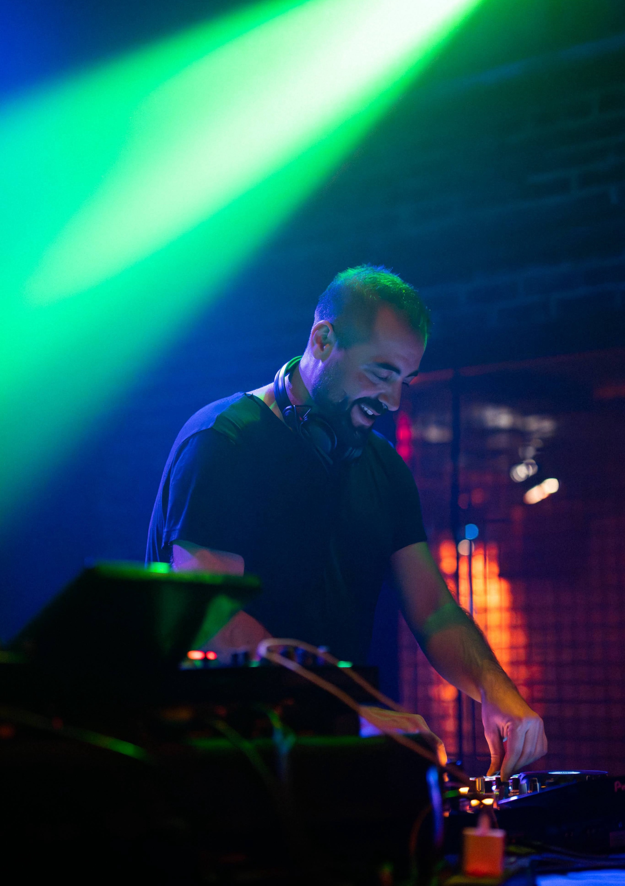
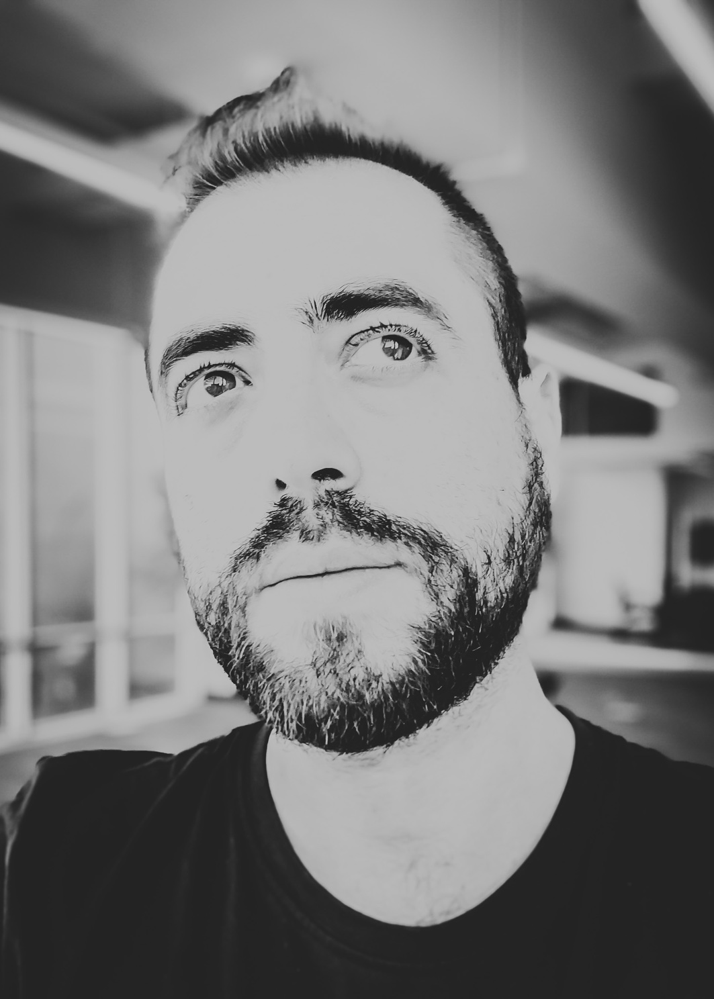
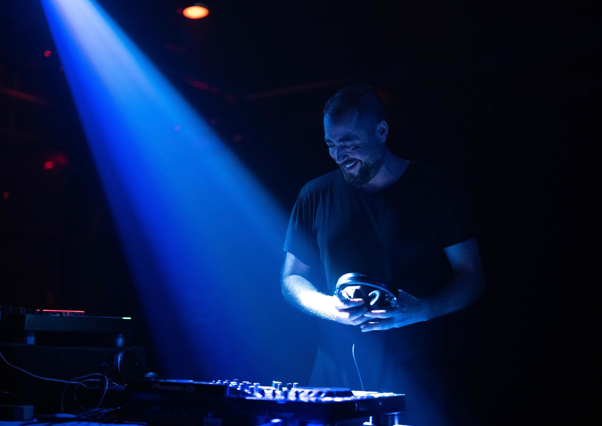
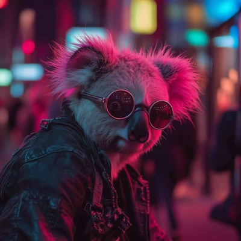
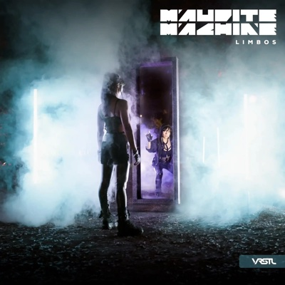
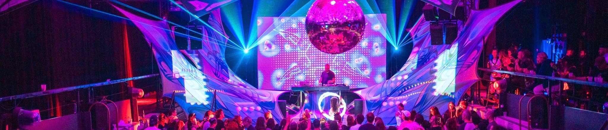
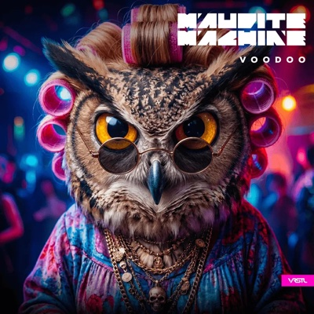

Hypnotic techno · live hybride et DJ
Montpellier, France
Press kit 2027
Maudite Machine plays hypnotic techno, as a DJ and as a hybrid live act. After fifteen years in the Montreal underground, he is now based in Montpellier, France. He has played the SAT, Piknic Électronik, the Igloofest afters, Centre Phi, Fonderie Darling and Théâtre Fairmount, and festivals including OKAMI, Groove and Bass, Future Forest, Khumeia, Illusion, Eclipse Transformation and TOTEM, in rooms from 100 to 4 000 people. He founded VRSTL Records, home to 21 EPs and 2 albums by artists from Quebec, Argentina and Europe, and is a member of the 8day collective in Montreal. He also teaches music production in Ableton Live, with more than 70 students.


Hypnotic techno: a rolling bass line, slow changes beneath the surface, no artificial peaks. Built to last, not for effect.
DJ set on CDJs, from 90 minutes to 4 hours.
Hybrid live with Ableton Live, Push 3, Dreadbox Typhon and APC40, 60 to 75 minutes, sequences driven live.
In clubs and at festivals, he plays long slots, deep into the night and through sunrise. That is the register of Alchemy Circle.
Reference mix
Mixtape 39
soundcloud.com/mauditemachine/mixtape-39-maudite-machine

Coagule
soundcloud.com/mauditemachine/coagule

Zenith
soundcloud.com/mauditemachine/zenith-original-mix
Limbos
soundcloud.com/mauditemachine/limbos-original-mix

Limbos

Voodoo
13 releases on VRSTL Records between 2024 and 2026.
Laurent Garnier, DVS1 and Plaid, Green Velvet and Riva Starr, The Alan Parsons Project.
Unofficial edits, free download.The artist brings: MacBook Pro with Ableton Live, Ableton Push 3, Dreadbox Typhon, Akai APC40, an audio interface with two balanced outputs, all cables between his own devices.
The venue provides: 2 active DI boxes or 2 balanced XLR lines to front of house, a table of 180 x 70 cm minimum, 4 grounded power sockets, 2 active full-range monitors at ear height, adjustable from the booth.
2 Pioneer CDJ-3000 (CDJ-2000NXS2 accepted), linked with Pro DJ Link, firmware up to date.
Mixer: DJM-A9, DJM-V10 or DJM-900NXS2.
Plays from USB, rekordbox export.
Departs from Montpellier, France.
Canadian and French passports, no visa needed in Europe.
Travels alone.
Speaks French, English and Spanish.
International booking: Diane, vrstlrecords@gmail.com
Booking Canada and USA: mauditemachine@gmail.com, +1 514 653 1423
Website: mauditemachine.com
Full press kit, high resolution photos and tech rider: mauditemachine.com/press
mauditemachine.com/press